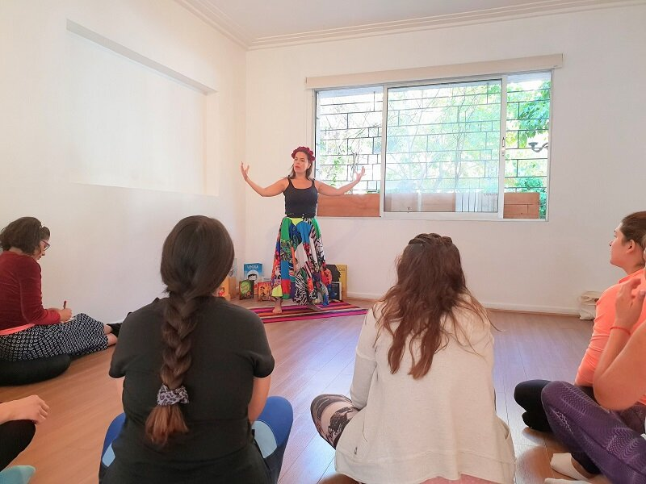

Las experiencias más enriquecedoras son aquellas que compartimos con otros..
A continuación les presentamos los testimonios de nuestras participantes en al última formación de Cuentacuentos con Yoga para Niños realizado en Santiago, Chile.
Mi nombre es Paloma y estoy aquí para invitarles a vivir una experiencia maravillosa en Cuentacuentos con Yoga Junto a Peggy y Javiera que son dos grandes mujeres, muy profesionales, maravillosas y muy generosas con las herramientas que nos entregan para poder compartir con nuestros niños o nuestros seres queridos y poder usar estas herramientas como terapia de sanación y también como desarrollo personal, lo más importante, para actores, fonoaudiologos, profesores, etc. Vengan por favor a vivir esta experiencia.
Les recomiendo mucho este curso con Cuentacuentos, es una herramienta super útil tanto para nosotros para ver la vida de otra forma como para nuestros niños, los adultos, quienes sean que lo necesiten. Así que de verdad super invitados, es una super experiencia.
Hola les quiero invitar a esta hermosa experiencia que vivimos este fin de semana por dos días, la experiencia de cuentacuentos con Yoga. La verdad es que descubrimos herramientas maravillosas que son sanadoras tanto para nosotras como adultos como para los niños y niñas. Atrévanse y vengan a aprender.
¡Hola! Los quiero dejar invitados a esta gran experiencia que acabo de vivir este fin de semana, una experiencia maravillosa que me llevo para la casa para trabajar durante todo este tiempo con los niños. Es una experiencia enriquecedora, que nos sirve mucho para trabajar de distintas maneras con los niños y también para llegar a ellos de distintas maneras a través de un cuento, mediante esta disciplina que se llama yoga que no es tan solo postura sino también el tema de la respiración, el tema de la meditación y el tema de creerse el cuento, que es lo que yo vine a aprender. Beso!